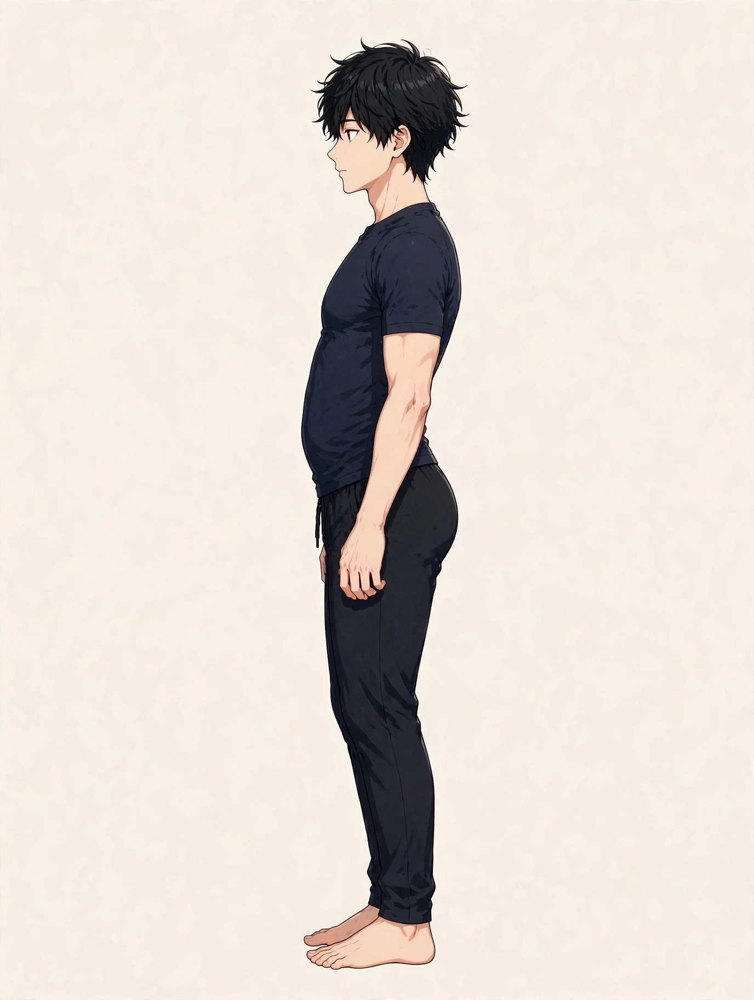
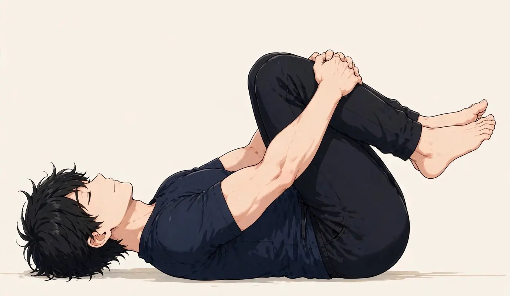

専門家の知識で読み解く腰痛のケア ｜ 東三国・新大阪
慢性腰痛でお悩みの方へ東三国・新大阪の男性専用整体院 北辰堂

初回60分 2,000円（税込）からLINEで予約する
3か月以上腰の痛みや重さが続く、朝起きると腰が固まっている、夕方になると腰が持たない——。慢性腰痛は、働く男性の生活の質を大きく左右する悩みです。
このページでは、慢性腰痛の考え方、関係する筋肉、東洋医学の見方とツボ、施術の考え方、セルフケア、受診の目安を専門的に整理しました。一般的な健康情報としてお読みください。
① 慢性腰痛とは
腰痛は、大きく「特異的腰痛」と「非特異的腰痛」に分けて考えられます。特異的腰痛は、椎間板ヘルニアや脊柱管狭窄症、圧迫骨折、感染、内臓の疾患など、原因が特定できるものを指します。
筋肉の面では、背骨の一つひとつをつなぐ多裂筋と、腰の側面で骨盤と肋骨をつなぐ腰方形筋が重要な役割を持ちます。多裂筋は背骨の安定を担う深い位置の筋肉で、働きが落ちると背骨の支えが不安定になり、周囲の大きな筋肉が過剰に頑張る悪循環に入りやすくなります。
慢性化には「痛みをかばう動き」が関係することもあります。動かすことへの不安から活動量が落ち、筋力や柔軟性が低下し、さらに痛みを感じやすくなる——この循環を断つことが、慢性腰痛への対応の基本的な考え方です。
多裂筋は背骨のすぐ脇にある深い筋肉で、背骨の安定を担います。腰方形筋は腰の側面で骨盤と肋骨をつなぎます。脊柱起立筋は背中全体を支える筋肉の総称です。位置は目安です。
ここからは、慢性腰痛に関係する筋肉を一つずつ取り上げ、どこにつき（付着部）、どんな働きをし、負担がかかるとどう感じやすいかを整理します。ご自身の張りの中心がどこにあるかを見分ける手がかりにしてください。
多裂筋は背骨の一つひとつの節をつなぐ短い筋肉の集まりで、斜め上へ向かう走行を繰り返します。脊柱起立筋はその外側を縦に走る大きな筋肉群です。位置は目安です。
筋肉別に見る1：多裂筋（背骨を支える深層の筋肉）
多裂筋は、背骨の後ろの突起（棘突起）から2〜4節ほど下の骨へ斜めにつながる、短い筋肉の集まりです。背骨の一つひとつの節の位置関係を細かく調整し、背骨がぐらつかないよう支える「深層の安定装置」の役割を持ちます。表面からは触れにくい位置にありますが、腰痛との関係が深い筋肉として知られ、慢性腰痛の方ではこの筋肉の働きが落ちていることがあるとされます。働きが落ちると、次に述べる脊柱起立筋のような大きな筋肉が代わりに頑張り続け、背中全体の張りや疲労感につながります。図4に、多裂筋の節ごとの走行と、脊柱起立筋との位置関係を示します。
筋肉別に見る2：腰方形筋（腰の側面の支え）
腰方形筋は、骨盤の上縁（腸骨稜）から、腰の骨の横の突起（腰椎の横突起）と一番下の肋骨（第12肋骨）へつながる、腰の側面の深い位置にある四角形の筋肉です。体を横に倒す動きや、歩くときに骨盤が横へ落ちないよう支える働き、片脚に体重が乗る場面で腰を安定させる働きを担います。長時間の立ち仕事や、片側に体重をかける癖、脚を組む座り方などで左右どちらか一方に負担が偏りやすく、「腰の片側だけが深いところで張る」「腰の横を押すと奥に響く」といった感覚の中心になりやすい筋肉です。図5に、腰方形筋の付着部と走行を示します。

腰方形筋は骨盤の上縁から肋骨と腰椎の横突起へ、大臀筋は骨盤の後ろから太ももの骨へつながります。位置は目安です。
筋肉別に見る3：脊柱起立筋（背中を縦に支える筋肉群）
脊柱起立筋は、背骨の両側を首から骨盤まで縦に走る筋肉の総称で、内側から棘筋・最長筋・腸肋筋の3つの柱で構成されます。体を後ろへ反らす動きと、前に倒れた体を引き起こす動きの主役であり、立っている間も座っている間も、重力に対して背筋を保つために働き続けています。前かがみの作業や重い物の持ち上げが続くと、この筋肉群に疲労が蓄積し、「背中の真ん中あたりが板のように張る」「夕方になると背中全体が重い」といった感覚につながります。多裂筋のような深層の支えが働いていると負担が分散しますが、深層の働きが落ちると脊柱起立筋への集中が強まります（図4）。
筋肉別に見る4：臀筋と股関節（腰の負担を肩代わりする場所）
お尻の筋肉（大臀筋・中臀筋）と股関節の動きは、腰の負担と直結しています。大臀筋は骨盤の後ろから太ももの骨へつながり、立ち上がる・階段を上る・体を持ち上げるといった大きな動きの主役です（図5）。この筋肉の働きが落ちたり、股関節の前側が硬くて脚を後ろへ引く動きが小さくなったりすると、不足分を腰を反らす動きで補うようになり、腰の後ろ側へ負担が集まります。「腰そのものより、お尻の奥や股関節の付け根が気になる」という方も少なくありません。腰のケアを考えるときは、腰だけでなく臀部と股関節の状態もあわせて見ることが大切です。
筋肉別に見る5：体幹の支え（お腹側の筋肉との共同作業）
腰の安定は、背中側の筋肉だけで作られているわけではありません。お腹の深い位置にある腹横筋はコルセットのように体幹を包み、呼吸を担う横隔膜、骨盤の底を支える骨盤底の筋肉と共同して、お腹の内側から背骨を支える働きをしています。背中側の多裂筋と、お腹側の腹横筋が向かい合って働くことで、背骨は前後から挟まれるように安定します。息を止めて力む癖や、浅い呼吸が続く生活では、この共同作業がうまくいかず、背中側だけに負担が寄りやすくなります。施術やセルフケアで呼吸の深さに触れるのは、そのためです。
② 要因の整理
慢性腰痛の要因は複合的です。体の負担と生活の両面から代表的なものを整理します。
- 同じ姿勢の持続（座位・前かがみ）：座り姿勢や前かがみ作業が続くと、腰の筋肉と椎間板への負担が蓄積します。とくに骨盤が後傾した座り方は、腰のカーブが失われ負担が増えます。
- 運動不足と筋力の低下：体幹や臀部の筋肉が落ちると、腰だけに負担が集中します。活動量の低下は、慢性化の循環の中心にある要因です。
- 持ち上げ動作の繰り返し：荷物を体から離して持つ、ひねりながら持ち上げるといった動作は、腰への負担が大きくなります。仕事や介護、引っ越し作業などで蓄積します。
- 体重の増加：体重の増加は腰への物理的な負担を増やします。特にお腹まわりについた場合は、重心の変化から腰を反らす力が働きやすくなります。
- 睡眠不足と疲労の蓄積：睡眠が不足すると痛みを感じやすくなることが知られています。疲労が抜けない生活は、回復より負担が上回る状態を続けます。
- ストレスと痛みへの不安：痛みへの不安や仕事のストレスは、痛みの感じ方に影響することが分かってきています。心理的な要因は「気のせい」ではなく、慢性化を考えるうえでの正式な要素です。
- 股関節・胸椎の硬さ：腰の上下にある股関節と胸椎（背中の骨）の動きが小さくなると、曲げる・反らす・ひねるといった動きの不足分を腰が肩代わりします。可動域の偏りは、腰への負担の集中として現れます。
- 冷えと血の巡りの滞り：冷房の風が腰に直接当たる環境や、薄着での作業が続くと、腰まわりの巡りが滞り、張りや重さを感じやすくなります。入浴をシャワーで済ませる生活も、巡りを戻す機会を減らします。


耳の穴・肩の先・骨盤の中央・膝・外くるぶしがおおよそ一直線に並ぶ状態と、骨盤が前に倒れて腰の反りが強くなった姿勢（反り腰）との違いを示します。位置は目安です。
図6に、側面から見た姿勢ラインの目安を示します。負担の少ない姿勢では、耳の穴・肩の先・骨盤の中央・膝・外くるぶしが、側面から見ておおよそ一直線に並ぶとされます。一方、骨盤が前に倒れた反り腰の姿勢では、腰の反りが強くなり、腰の後ろ側の関節や筋肉に負担が集まりやすくなります。逆に、骨盤が後ろへ倒れて腰が丸まった姿勢では、腰の後ろの組織が引き伸ばされ続ける負担がかかります。どちらの方向へも偏りすぎないことが、腰の負担を分散させる目安になります。横向きの全身が映る鏡や写真で、ご自身の骨盤の傾きの傾向を確認してみてください。
要因は姿勢や筋肉だけではありません。睡眠不足が続くと筋肉の緊張が抜けにくくなり、同じ負担でも痛みを強く感じやすくなります。痛みへの不安が強い時期は、体を動かすこと自体を避けるようになり、活動量の低下がさらなる筋力低下を招くという循環も起こります。「忙しい時期ほど腰がつらい」という感覚には、こうした体の状態の変化も重なっています。体の負担と生活の両面から振り返ることが、要因の切り分けに役立ちます。
③ セルフチェックリスト
腰の状態と生活の傾向を振り返るためのチェックです。痛みの強さだけでなく、日常のパターンに目を向けてください。
- 腰の痛みや重さが3か月以上続いている
- 朝起きたとき腰が固まっていて、動くうちに楽になる
- 夕方になると腰が持たなくなる
- 長時間座った後、立ち上がるときに腰が伸びにくい
- 運動習慣がほとんどない
- 腰が不安で、体を動かすことを避けがちになっている
- 睡眠時間が不足している日が多い
- 仕事のストレスが強い時期に腰もつらくなる
チェックは診断のためのものではありません。脚のしびれや力が入りにくい感覚、発熱などを伴う場合は、慢性腰痛として扱わず⑧の受診の目安を確認してください。
自分でできるチェック1：前屈・後屈の動きを確認する
立った状態で、ゆっくりと前へかがむ動き（前屈）と、両手を腰に当てて軽く後ろへ反らす動き（後屈）を確認してみましょう。前屈では「どこまで倒せるか」より、腰の後ろが伸びる感覚と、太ももの裏のつっぱりのどちらが先に来るかを見ます。後屈では、腰の後ろに詰まるような感覚や、脚へ響く感覚がないかを確認します。反らすと脚にしびれが広がる場合は無理をせず、その動きは中止してください。動きの得意・不得意のパターンは、腰への負担がどこから来ているかを考える手がかりになります。
自分でできるチェック2：圧痛点（押して響く場所）を探す
指の腹や、壁とボールを挟む方法で、腰の両脇（腰方形筋のあたり）、背骨のすぐ横、お尻の中央（大臀筋のあたり）を、左右を比べながらゆっくり押してみましょう。押したときに奥へ響くような感覚がある場所は、緊張が集まりやすい場所の目安になります。強く押し込む必要はなく、体重を少しずつ預ける程度の圧で十分です。チェックで見つけた場所は、⑥のセルフケアや④のツボ押しで優先的にゆるめる対象になります。ただし、押すと脚へしびれが広がる場合は、その場所への刺激は避けてください。
チェックの結果は、その日のうちにメモしておくと、施術の際に状態を伝える材料にもなります。「いつ・どこが・どの動きで」を一言で残すだけでも十分です。
④ 東洋医学から見た考え方とツボ
東洋医学では、腰は「腎の府（腰は腎を宿す場所）」とされ、年齢や疲労の蓄積で腎の働きが弱まると、腰の支えが弱くなりやすいと考えます。また、背中を下る足の太陽膀胱経の巡りの滞りは、腰の張りや重さとして感じられるとされます。冷えも巡りを滞らせる大きな要因です。
関係するツボは、膀胱経の腎兪・大腸兪、そして「腰背は委中に求む」という言葉で知られる委中です。北辰堂では鍼灸施術は行いませんが、経絡の考え方を、腰まわりから臀部・脚まで含めた緊張の確認と、セルフケアの案内に活かしています。

腎兪は腰の背骨の両脇（へその裏側の高さ）、大腸兪はその少し下、委中は膝の裏の中央にあります。位置は目安です。
ツボ：腎兪（じんゆ）
位置：腰の最も細い部分の高さで、背骨から指2本分ほど外側の、背中の筋肉の盛り上がりの上にあります。へその真裏の高さが目安です。
押し方：両手の親指を左右に当て、ゆっくり円を描くように揉みます。仰向けで両こぶしを腎兪の下に敷き、体重で圧を感じる方法も行いやすい方法です。強く押しすぎないでください。
ツボ：大腸兪（だいちょうゆ）
位置：骨盤の一番高い部分（ジャケットのベルトが当たる高さ）を結んだ線と背骨が交わるあたりの、左右指2本分ほど外側です。
押し方：腎兪と同様、親指でゆっくり圧を加えるか、壁とボールを挟んで体重を預けます。腰の中心部が張っている日に取り入れやすいツボです。
ツボ：委中（いちゅう）
位置：膝の裏の中央、横シワの真ん中にあります。腰から遠い場所ですが、古くから腰背の不調に使われてきたツボです。
押し方：椅子に座り、両手の指先で膝裏を包むように持ち、親指以外の指で軽く圧を加えます。強く押すと神経や血管を圧迫するため、優しい刺激に留めてください。
ツボ押しに共通する注意として、押す強さは「痛気持ちいい」と感じる範囲までに留め、1か所あたり30秒ほどを目安にしてください。食後すぐや飲酒後は避け、押した場所の感覚が強まるようなら中止します。腎兪と大腸兪は膀胱経の背中のライン（背部兪穴）の一部で、腰のラインの巡りを整える考え方で並べて使われます。委中のように離れた場所のツボを組み合わせるのは、経絡が腰から脚の後ろを通ってつながっているという考え方にもとづきます。
⑤ 整体・リラクゼーションでの施術の考え方
北辰堂の施術では、腰そのものへの対応だけでなく、腰に負担が集中している理由を確認します。胸椎や股関節の動き、臀部の筋肉の働き、座り方や立ち方の癖を評価し、「腰が頑張りすぎている条件」を一つずつほどいていく組み立てにします。
慢性腰痛では、活動量を保つことが大切とされます。施術では、その日の状態に合わせて体を動かす練習も組み合わせ、動くことへの不安を少しずつ減らす進め方をします。痛みのまったくない状態を目指すのではなく、日常生活でできることが広がっていく経過を一緒に確認します。
画像検査で原因が特定できるタイプの腰痛（特異的腰痛）については、医療機関での対応が優先です。当院の施術は、医療機関での評価を前提に、日常の負担を整える補助的なケアとしてご利用ください。
北辰堂の施術は、気になる部分だけを見るのではなく、姿勢や骨格の土台と巡りの両方を見ながら、深い圧で奥の張りまでほぐして整えていくのが持ち味です。施術のあとに「体が軽い」「呼吸が深い」と感じていただける状態を目指して組み立てます。
施術の進め方と、途中で確認するポイント
当院の施術は、60分・90分の枠の中で、①その日の状態の確認（張りの中心・左右差・前屈や後屈の動きの制限）、②腰まわりの表面の筋肉から順にほぐす、③臀部と股関節まわりの動きを引き出す、④背中全体と脚の後ろまで範囲を広げて整える、という流れで進めます。途中では、立ち上がったときの腰の伸びやすさや、前かがみの深さの変化を確認しながら圧の深さを調整します。強さの希望は遠慮なくお伝えください。「強く揉むほど良い」というものではなく、その日の筋肉の状態に合った圧で、奥の張りへ届かせることを意識しています。
当院では、鍼灸師としての専門知識にもとづき、慢性腰痛に関係する筋肉・関節・姿勢・生活習慣の要因を専門家の視点で整理しながら、施術の進め方を組み立てます。
料金
北辰堂の料金は、コースごとに初回と2回目以降の金額を分けてご案内しています。いずれも税込価格で、施術料以外の費用はかかりません。
| コース | 初回（初めての方） | 2回目以降 | 備考 |
|---|---|---|---|
| 整体・リラクゼーション 60分 | 2,000円（税込） | 6,000円（税込） | お支払いは現金のみ |
| 整体・リラクゼーション 90分 | 3,000円（税込） | 9,000円（税込） | お支払いは現金のみ |
初回に含まれること
- 問診：現在の状態や日常の負担、気になる部位をお聞きします。
- 姿勢チェック：姿勢や動きの左右差、腰まわりと股関節の動きを確認します。
- 施術：その日の状態に合わせて、整体・リラクゼーションを行います。
- セルフケアのご案内：ご自宅で続けられるケアの方法をお伝えします。
初回60分 2,000円（税込）からLINEで予約する
⑥ セルフケア
慢性腰痛のセルフケアの基本は「安静にしすぎず、痛みの範囲で動く」ことです。強い痛みが出る動きは中止し、主治医がいる方は確認のうえ行ってください。

四つ這いで背骨を丸める・反らすを繰り返します。①四つ這いになる ②息を吐きながら背中を丸める ③息を吸いながら軽く反らす、を各5回ゆっくり行うのが基本の流れです。
セルフケア1：四つ這いの背骨の動き（キャット＆カウ）
四つ這いになり、息を吐きながら背中を丸めておへそをのぞき込みます。次に息を吸いながら背中を軽く反らし、視線を正面へ戻します。各5回、ゆっくりと呼吸に合わせて繰り返します。腰だけでなく背骨全体を動かす運動です。痛みが強い日は中止してください。

仰向けで片膝を両手で抱え、胸の方向へゆっくり引き寄せます。両脚同時より片脚ずつのほうが腰への負担が少なく行えます。
セルフケア2：膝抱え（片脚ずつ）
仰向けで片膝を両手で抱え、胸の方向へゆっくり引き寄せて20秒保ちます。左右交互に2回ずつ。両脚同時より片脚ずつのほうが腰への負担が少なく行えます。脚のしびれが出る場合は中止してください。手順は図7に示します。
セルフケア3：歩行の習慣化
慢性腰痛では、歩くことが基本的な運動として勧められます。まずは1日10〜20分、腕を振って歩くところから始め、無理のない範囲で少しずつ延ばします。痛みが翌日に強く残る場合は量を調整してください。
セルフケア4：座り方と休憩の区切り
椅子に深く座って坐骨を立て、足裏を床につけます。30〜50分に一度は立ち上がり、腰を軽く反らす・歩くなど姿勢を変えます。「良い姿勢を続ける」より「同じ姿勢を続けない」ことが慢性腰痛では大切です。
セルフケア5：うつ伏せで肘を立てる（腰を軽く反らす）
うつ伏せになり、両肘を肩の下に置いて前腕で体を支え、上半身を軽く持ち上げて30秒ほど保ちます。腰を反らす方向の動きで、長時間の前かがみや座り姿勢で丸まった腰を反対方向へ動かす目的で行います。反らしたときに腰の後ろの詰まり感が強い場合や、脚へしびれが広がる場合は中止してください。反らすことが合わないタイプの腰痛もあるため、初めて行う場合は短い時間から始め、感覚の変化を確認しながら取り入れてください。
セルフケア6：お尻のストレッチ（仰向けで脚を組む）
仰向けで両膝を立て、右の足首を左の太ももの上に乗せて脚を組みます。左の太ももの裏を両手で抱え、胸の方向へゆっくり引き寄せると、右のお尻の奥が伸びます。20秒保って左右を入れ替えます。臀部の硬さは腰の動きの偏りと関係するため、腰そのもののケアと組み合わせて行うと、立ち上がりや歩行の動きが滑らかになりやすくなります。股関節に痛みがある場合は無理のない範囲に留めてください。
セルフケアの組み立て方
セルフケアは、たくさん行うよりも、毎日続けられる量に絞る方が、結果的に負担の蓄積を抑えやすくなります。目安は、朝は布団の上や起床後に膝抱え（セルフケア2）、日中は座り方の区切り（セルフケア4）と歩行（セルフケア3）、帰宅後は四つ這いの動き（セルフケア1）とお尻のストレッチ（セルフケア6）を行う流れです。前かがみの多い日は、うつ伏せの肘立て（セルフケア5）を短く挟むと、腰の方向の偏りをリセットしやすくなります。③のチェックで見つけた圧痛点には、④のツボ押しを組み合わせてください。張りが強い日に、無理をして回数を増やす必要はありません。
セルフケアの補足：温める・冷やすの使い分け
温めることが向くのは、冷えで腰が固まった感じがするとき、慢性的な重だるさが続くときです。入浴で腰まで浸かる、蒸しタオルを腰に当てるといった方法があります。一方、重い物を持った直後や、熱を持ってズキズキする感覚があるときは、温めるとかえって不快になる場合があり、そのときは無理に温めず、まず安静にしてください。判断に迷うときは「冷えて固まった感じなら温める」を目安にし、感覚が強まるようなら中止してください。
⑦ 場面別の注意
- 仕事中（デスクワーク）：会議や作業が続く日は、腰が固まりやすくなります。立ち上がる区切りを予定として入れておく、印刷物を取りに行くなどの小さな移動を意図的に作ってください。
- 荷物を持つとき：荷物は体に近づけて、脚の力で持ち上げます。腰をひねりながらの持ち上げは避け、重いものは台車や分割運搬を検討してください。
- 車の運転時：長時間の運転は腰の負担が蓄積します。1〜2時間ごとの休憩と、シートの腰当て（ランバーサポート）の調整が有効です。
- 就寝・起床時：朝の固まりがある方は、起き上がる前に布団の中で膝を抱えるなど小さな動きから始めると、腰への急な負担を減らせます。
- 介護・育児の場面：抱き上げやおむつ替えなど、前かがみで体重を支える動作が続く場面では、腰への負担が集中します。台の高さを調整する、片膝をついて脚の力を使うなど、腰だけで支えない工夫が有効です。
- 運動・スポーツの前後：急な全力の動きは、固まった腰への負担が大きくなります。始める前に歩行や四つ這いの動きで腰を温め、終わった後は張りの強い場所を圧迫・ストレッチで整えてください。ゴルフなど体をひねる競技では、股関節から回す意識が腰の負担を分けます。
- 長距離の移動・旅行時：電車や飛行機の座席では、骨盤が後ろへ倒れた座り方が続きやすくなります。腰の後ろに小さなクッションや丸めたタオルを当てて腰のカーブを支え、可能な範囲で立って歩く区切りを作ってください。
- 在宅ワークの場面：ダイニングのテーブルと椅子では座面の高さが合いにくく、腰が丸まった姿勢が続きます。クッションで座面の高さを調整する、足台を使うなど、専用の作業環境に近づける工夫が負担を減らします。
⑧ 受診の目安
- 脚にしびれや力が入りにくい感覚がある、つま先が上がりにくい
- 排尿・排便の変化（出にくい、漏れる、感覚が鈍い）がある
- 発熱や、原因不明の体重減少を伴う
- 転倒や事故など、けがをきっかけに痛みが始まった
- 安静にしていても痛みが強く、夜間に痛みで目が覚める
- がんや骨粗鬆症、ステロイド使用中など、背景となる持病がある
- 3か月以上セルフケアと生活の見直しを続けても、痛みが強くなる一方である
腰痛のなかには、医療機関で早急に評価すべき状態（レッドフラッグ）があります。上記に当てはまる場合は、整体の前に整形外科など医療機関を受診してください。特に排尿・排便の変化や脚の力の入りにくさがある場合は、速やかな受診が必要です。
受診先の選び方
受診先に迷う場合は、症状の中心で選ぶのが目安です。腰の痛みに加えて脚のしびれや力の入りにくさがある場合は整形外科、排尿・排便の変化を伴う場合は泌尿器科や救急も含めて速やかな相談を、発熱や体重減少を伴う場合は内科が相談先になります。どの科でも、「いつから・どこに・どんな感覚か」「脚のしびれや力の入りにくさの有無」「排尿・排便の変化の有無」を伝えられるよう、③のチェック結果をメモしておくと診察が進みやすくなります。
⑨ よくある質問
Q. 慢性腰痛はずっと付き合うしかないのですか？
非特異的腰痛では、活動量を保ち、姿勢や生活の負担を見直すことで、日常の過ごしやすさが変わっていく方が多くいます。当院では施術とセルフケア、生活の見直しを組み合わせ、できることの範囲が広がる経過を一緒に確認します。
Q. 腰痛のときは安静が一番ですか？
急性の強い痛みの直後を除き、慢性腰痛では過度な安静は回復を遅らせる可能性があるとされ、痛みの範囲で活動を保つことが基本とされています。安静の目安に迷う場合は、医療機関で相談してください。
Q. コルセットは使い続けたほうがよいですか？
コルセットは、負担の大きい作業時の補助として有効な場面があります。一方、使い続けると体幹の筋肉が働く機会が減る面もあります。使用の要否や場面は、状態に合わせて医療機関や施術者と相談しながら決めることをおすすめします。
Q. 施術では腰をバキバキ鳴らしますか？
当院では、腰を強くひねって音を鳴らすような操作は行いません。状態を確認しながら、腰まわりと周辺部位の緊張を段階的に緩める施術を行います。不安な点は施術前に遠慮なくお知らせください。
Q. 腰痛のときは温めたほうがよいですか？
慢性的な重だるさや、冷えて固まった感じには、温めることが合う場合が多くあります。一方、動かした直後で熱を持っている感覚があるときや、急に強くなった痛みには、温めるとかえって不快になる場合があります。感覚が強まるようなら中止し、判断に迷う場合は医療機関へ相談してください。
Q. 痛みがあるときに運動しても大丈夫ですか？
強い痛みの直後を除き、慢性腰痛では痛みの範囲で活動を保つことが基本とされています。歩行など負担の小さい動きから始め、翌日に痛みが強く残る場合は量を減らしてください。脚のしびれや力が入りにくい感覚を伴う場合は、運動の前に医療機関へ相談してください。
Q. 初回は本当に2,000円ですか？追加でかかる費用はありますか？
はい。60分コースの初回は2,000円（税込）、90分コースの初回は3,000円（税込）です。施術料以外の費用はかかりません。お支払いは現金のみとなります。
Q. 2回目以降はいくらですか？
60分コースは6,000円（税込）、90分コースは9,000円（税込）です。料金は「料金」の節と料金・メニューページにもご案内しています。
腰痛と間違えやすい症状との違い
腰の不調は、すべてが同じ「慢性腰痛」とは限りません。痛みの出方と、脚の症状の有無によって、関係する部位や必要な対応が変わります。代表的なものを整理します。切り分けは診断ではありませんが、ケアの選び方と受診先を考える目安になります。
ぎっくり腰（急性腰痛）との違い
ぎっくり腰は、物を持ち上げた瞬間などに急に強い痛みが出るタイプで、発症直後は動くこと自体が難しいほどの痛みになることがあります。慢性腰痛は、強い痛みが3か月以上にわたって続く、または繰り返す状態を指します。急な強い痛みの直後は、無理に動かしたり温めたりせず、まず安静にして様子を見てください。詳しくはぎっくり腰（急性腰痛）のページをご覧ください。
腰椎椎間板ヘルニア・脊柱管狭窄症との違い
ヘルニアや脊柱管狭窄症は、神経の通り道が狭くなったり圧迫されたりすることで、腰の痛みに加えて脚のしびれや痛みが出やすい点が特徴です。脊柱管狭窄症では、歩くと脚がしびれて休むと楽になる「間欠性跛行」と呼ばれるパターンも見られます。脚の症状が中心の場合は、慢性腰痛として扱う前に医療機関での評価が優先です。詳しくは腰椎椎間板ヘルニアのページと脊柱管狭窄症のページをご覧ください。
坐骨神経痛との違い
坐骨神経痛は病名ではなく、お尻から太ももの裏、ふくらはぎへかけて痛みやしびれが広がる症状の呼び方です。腰そのものの重さが中心の慢性腰痛と違い、脚へ流れるような感覚が中心になります。原因はヘルニアや狭窄症のほか、お尻の筋肉（梨状筋）まわりの緊張が関係する場合もあります。詳しくは坐骨神経痛のページをご覧ください。
内臓の不調が関係する場合
腰の痛みの中には、腎臓や消化器など内臓の不調が背中や腰の感覚として現れる場合もあります。姿勢や動きと関係なく痛む、発熱や血尿・腹痛を伴う、安静にしても変わらないといった場合は、腰の筋肉の問題として扱わず、内科など医療機関へ相談してください。⑧の受診の目安もあわせて確認してください。
北辰堂のご案内
北辰堂は、大阪市淀川区東三国二丁目にある整体院です。男性スタッフ1人で運営しているため、男性専用としています。施術歴30年の平賀伸人（鍼灸師・国家資格）が、整体とリラクゼーションを行います。当院では鍼灸施術は行いません。営業は平日・土曜17:00〜22:00、日曜10:00〜22:00の完全予約制です。料金は60分 初回2,000円／2回目以降6,000円、90分 初回3,000円／2回目以降9,000円で、お支払いは現金のみです。プライバシーへの配慮のため、詳しい住所はご予約確定後にLINEでご案内します。
メニュー・料金は料金・メニューページ、施術者については当院についてをご覧ください。
関連するお悩み
ご予約・ご相談はLINEから
東三国・新大阪・淀川区周辺で、体のケアの相談先をお探しの方は、LINE公式アカウント（北辰堂）からお気軽にご連絡ください。現在の状態をお聞きしたうえで、施術の進め方をご案内します。
初回60分 2,000円（税込）からLINEで予約するさらに学びたい方へ：現場で使われる専門書（PR）
このページのテーマに合わせて選んだ本と、当店の施術でも参考にしている専門書です。


※本ブロックのリンクはAmazonアソシエイト・プログラムおよび楽天アフィリエイトによる広告リンクです。使用感の保証をするものではありません。